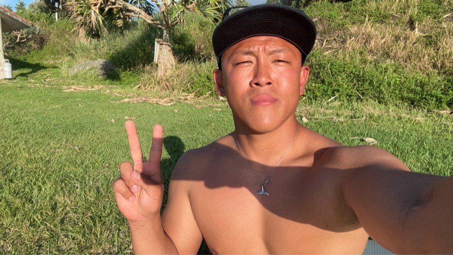

Regular shared boat
4小时拼船
上午或下午出发，常规主推方案。现地集合价格 ¥19,830/人（含税），微信/支付宝人民币支付可用。
- 浮潜 + 体验钓鱼
- 基本装备、保险、饮料和零食
- 天气允许时含无人机摄影和水下照片
- 不会游泳或想更安心，可加专属向导
Okinawa · Japan · Est. 2015 沖繩 · 日本 · 成立於2015 沖縄 · 日本 · 2015年創業
Experience Okinawa's pristine coral reefs and crystal-clear waters.
Small groups, local guides, free photos — beginners always welcome.
探索沖繩原始珊瑚礁和清澈海水。
小團體、本地嚮導、免費照片，歡迎初學者。
沖縄の透き通った海でシュノーケリングを体験。
少人数・地元ガイド・写真無料・初心者歓迎。
Why Choose Us 為什麼選擇我們 選ばれる理由
Meet Your Guide 認識你的嚮導 ガイド紹介

Licensed Commercial Diver & PADI Divemaster 商業潛水士 · PADI 潛水長 潜水士・PADIダイブマスター
Born in Osaka, in his twenties. Licensed commercial diver (Sensuishi) and PADI Divemaster, with a national PE teaching license. Former futsal player (2nd place, Fukuoka tournament). When he's not in the water, he's in the gym. Itsuki 出生於大阪，二十多歲。持有商業潛水士（潛水士）與 PADI Divemaster 資格，並擁有日本國家體育教師證照。曾是五人制足球選手（福岡大會第2名）。不在海裡時，他通常在健身房。 大阪生まれ、20代。潜水士とPADIダイブマスターの資格を持ち、保健体育の教員免許も取得。元フットサル選手（福岡大会2位）。海にいない日は、ジムで体を動かしています。
Choose by Area 按地点选择 按地點選擇
Our main field is Ginowan Marina and the Kerama sea area. For families and guests who care about safety, we can arrange Chinese-speaking support, extra guides, pickup, photography, and car rental together. 我们的主战场是宜野湾 Marina 出发的庆良间海域。适合重视安全、希望中文沟通、带小孩、需要接送或想把租车一起安排好的客人。 我們的主戰場是宜野灣 Marina 出發的慶良間海域。適合重視安全、希望中文溝通、帶小孩、需要接送或想把租車一起安排好的旅客。
宜野湾 Marina 出发 · 庆良间群岛海域
从宜野湾市 Marina 出发，进入庆良间群岛范围海域。适合想游得尽兴、看玻璃海、远离人群，同时体验浮潜、钓鱼、无人机摄影和水下摄影的客人。
Regular shared boat
上午或下午出发，常规主推方案。现地集合价格 ¥19,830/人（含税），微信/支付宝人民币支付可用。
Private charter
适合家庭、朋友、小团队。15人定船，5人以上安排2名 staff；如需中文向导，可增加到3名 staff。
Longer charter
适合想把海上时间拉长、节奏更从容、希望多玩一点海域和钓鱼体验的客人。
Sunset sea time
适合想轻松看海、拍夕阳、体验冲绳海面氛围的人。具体是否下水和出航以海况为准。
春季限定 · 持证潜水员浮潜活动
每年1-3月，冲绳周边海域有机会遇到座头鲸。这不是普通观光浮潜，而是面向持证潜水员、体力和水性足够、能严格听从船长和向导指示的季节限定活动。
本岛轻松体验
游客熟悉、交通更简单。我们会根据海况、年龄、是否恐水和接送需求，帮你选更安全的方式。
Onna Village · boat entry
提前1小时港口集合，船程约10分钟，水中进洞和喂鱼约40分钟，全程海上约1小时。
Blue Cave · stairs entry
不坐船，走楼梯上下。上午一班、下午一班，一对一不拼团，全程约3小时。
American Village · shore entry
岸潜不坐船，时间灵活。适合住在美国村或北谷附近、不想逛景点、想轻松下海的人。
Beyond snorkeling
如果客人不只是想浮潜，我们也可以根据经验和目标安排更深入的海洋项目。
可安排 fun dive / 持证潜水，按证照等级、经验、海况和潜点确认。
可安排体验潜水或教学课程，先确认健康状况、年龄和语言需求。
可提供从项目规划、现场资源、运营流程到本地对接的全程支持。
Drone & Underwater Photography 无人机 & 水下摄影 無人機 & 水下攝影
Guest Reviews 客人評價 お客様の声
"Best snorkeling experience in Okinawa. The guide was incredibly patient with our kids. We saw a sea turtle on the first dive!" 「沖繩最棒的浮潛體驗！嚮導對我們的小朋友非常有耐心，第一次下水就見到海龜！」 「沖縄で最高のシュノーケリング体験。ガイドが子供たちにとても丁寧に対応してくれて、最初のダイブでウミガメを見ました！」
"We're a family of 5 including 2 young children and one elderly grandparent. They arranged everything perfectly — safety briefing was thorough, Chinese-speaking guide made us feel at ease." 「我們一家五口，有兩個小朋友和一位長輩，安排得非常周全。中文嚮導令我們全程放心，強烈推薦！」 「5人家族で幼い子供2人と高齢の祖父母がいましたが、全て完璧に手配してくれました。中国語対応ガイドで安心でした。」
"Perfect for beginners. I was nervous about swimming but the instructor was calm and professional. The drone photos were a lovely surprise!" 「非常適合初學者。我對游泳有點緊張，但嚮導非常鎮定和專業。無人機照片是意外驚喜！」 「初心者に最適です。泳ぐのが不安でしたがインストラクターは落ち着いてプロフェッショナル。ドローン写真は嬉しいサプライズ！」
"Came on a day trip from Naha. The Kerama Islands are stunning — way beyond what photos can show. Booked over WhatsApp and everything was super smooth." 「從那霸出發的一日遊。慶良間群島美得令人窒息，比照片還要震撼。WhatsApp預約非常方便。」 「那覇からの日帰り旅行。慶良間諸島は写真以上に美しかったです。WhatsAppで予約もスムーズでした。」
FAQ
Where We Are 我們的位置 アクセス
We depart from Ginowan Marina — centrally located, easy to reach from Naha or the resort areas. 我們從宜野灣 Marina 出發，位置居中，從那霸或度假村區域均可輕鬆抵達。 宜野湾マリーナ出発。那覇やリゾートエリアからアクセス便利な中心地です。
Before You Dive 出发前须知 出發前須知
Participants with heart conditions, asthma, epilepsy, or pregnancy must consult a doctor before joining. Please disclose all medical conditions on the health declaration form. 患有心脏病、哮喘、癫痫或妊娠者，请在参加前咨询医生。请在健康声明表中如实填写所有病史。 患有心臟病、哮喘、癲癇或妊娠者，請在參加前諮詢醫生。請在健康聲明表中如實填寫所有病史。
Basic swimming ability required. Life jackets are provided for all participants. Children under 8 must be accompanied by a guardian at all times. 需具备基本游泳能力。所有参与者均提供救生衣。8岁以下儿童须全程由监护人陪同。 需具備基本游泳能力。所有參與者均提供救生衣。8歲以下兒童須全程由監護人陪同。
Chemical sunscreen is prohibited to protect coral reefs. Reef-safe mineral sunscreen and rash guards are available on board. 为保护珊瑚礁，禁止使用化学防晒霜。船上提供珊瑚礁友好型矿物防晒霜和防晒衣。 為保護珊瑚礁，禁止使用化學防曬霜。船上提供珊瑚礁友好型礦物防曬霜和防曬衣。
Free cancellation up to 48 hours before. 50% charge within 48h. Weather cancellations are fully refunded or rescheduled at no cost. 出发前48小时可免费取消。48小时内取消收取50%费用。因天气取消可全额退款或免费改期。 出發前48小時可免費取消。48小時內取消收取50%費用。因天氣取消可全額退款或免費改期。
Please download, complete, and bring the signed form on the day of your tour. 请下载并填写，在活动当天携带签署好的表格。 請下載並填寫，在活動當天攜帶簽署好的表格。
Special Bundle Deal 特惠组合 特惠組合
Book snorkeling with us and get an exclusive car rental discount — no middleman, no platform fees. Contact our team directly to be added to the group chat and get the best rate. 预订浮潜后即可享受专属租车优惠，没有中间平台，没有手续费。直接联系我们的客服加群，与现场人员沟通获取最优价格。 預訂浮潛後即可享受專屬租車優惠，沒有中間平台，沒有手續費。直接聯絡我們的客服加群，與現場人員溝通獲取最優價格。
Bundle Exclusive 组合专属优惠 組合專屬優惠
Registered Travel Agency · Okinawa Prefecture 冲绳县登录旅行业 沖繩縣登錄旅行業
文觀第598号
Registered: October 3, 2023 (Reiwa 5) 令和5年10月3日取得 令和5年10月3日取得
snorkel.nice.okinawa is a fully licensed travel agency registered with the Okinawa Prefectural Government. All tours are planned and operated under official travel industry regulations. snorkel.nice.okinawa 是在冲绳县政府正式登录的旅行业者，所有行程均依照旅行业法规划与运营。 snorkel.nice.okinawa 是在沖繩縣政府正式登錄的旅行業者，所有行程均依照旅行業法規劃與營運。
Simple Process簡單流程ご予約の流れ
Contact 聯絡我們 お問い合わせ
Send your date, group size, hotel area and preferred plan. We reply by email, WhatsApp or WeChat. 請告訴我們日期、人數、酒店區域和想參加的方案。我們會透過 Email、WhatsApp 或微信回覆。 日程、人数、ホテルエリア、希望プランをお知らせください。メール、WhatsApp、WeChatで返信します。